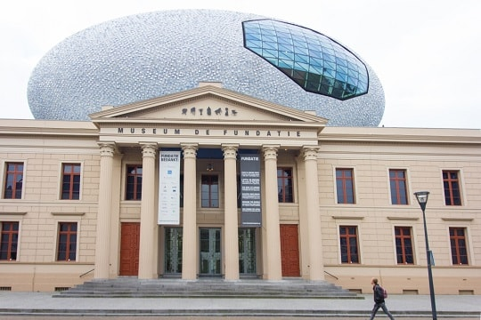
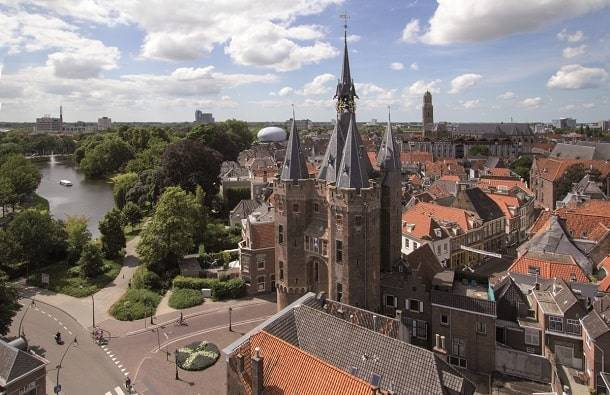

Dit belangrijkste kunstmuseum van de stad prijkt bovenaan iedere lijst met bezienswaardigheden in Zwolle. Hier vind je een aanzienlijke collectie beeldende kunst, waarbij grote namen zoals Picasso, Van Gogh en Mondriaan geen uitzondering zijn. Ook de buitenkant van het gebouw is iconisch, met haar bizarre bol bedekt met witblauwe tegeltjes. Kun je niet genoeg krijgen van de kunst in dit museum? Goed nieuws: dit is maar een deel van de collectie. De rest vind je in Kasteel het Nijenhuis, gelegen naast het dorpje Heino in de buurt van Zwolle.
Eén van de mooiste monumenten in Zwolle is de Sassenpoort, die als enige van de acht stadspoorten volledig bewaard is gebleven. Deze poorten werden gebruikt om de stad te verdedigen. De Sassenpoort is niet alleen een iconisch gebouw om van buitenaf te bekijken tijdens een stadswandeling, maar je mag ook binnen een kijkje nemen. Laat je rondleiden door een gids, die je alle leukste feiten over de poort zal vertellen.